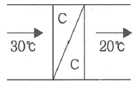
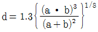
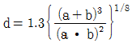
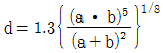
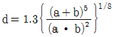
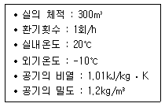
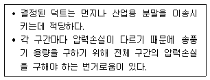
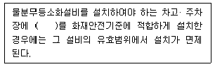
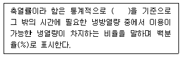

건축설비산업기사 (2017-05-07 기출문제)
1과목: 건축일반
1. 상점별 조명계획에 관한 설명으로 옳지 않은 것은?
- 서점 - 조도를 균일하게 함
- 제화점 - 바닥까지 충분한 조도가 요구됨
- 피혁, 가방 상점 - 높은 조도가 요구됨
- 귀금속점 - 전체조도는 높게 하고 국부조도는 낮게 함
(정답률: 94%)

2. 다음 중 사무소 계획에서 사무실의 크기를 결정하는 가장 중요한 요소는?
- 사무원의 수
- 방문객의 수
- 사무실의 위치
- 서류함, 책상 등의 비품
(정답률: 93%)
3. 사무소 건축에서 코어 시스템(core system)을 채용하는 이유로 옳지 않은 것은?
- 사용상의 편리
- 설비비의 절약
- 구조적인 이점
- 독립성의 보장
(정답률: 83%)
4. 학교의 운영방식 중 전 학급을 2개의 분단으로 나누어 한쪽이 일반교실을 사용할 때, 다른 분단은 특별교실을 사용하는 방식은?
- 종합교실형
- 교과교실형
- 플래툰형
- 달톤형
(정답률: 86%)
5. 다음 중 빛의 단위로 옳지 않은 것은?
- 광속 : W/m ㆍ K
- 조도 : lx
- 광도 : cd
- 휘도 : cd/m2
(정답률: 77%)
6. 조적공사의 담, 박공벽, 옥상의 난간벽 등의 상부를 덮어씌우는 돌의 명칭으로 옳은 것은?
- 쌤돌
- 부란
- 사고석
- 두겁돌
(정답률: 80%)
7. 주거계획의 기본방향에 관한 설명으로 옳지 않은 것은?
- 생활의 쾌적성 증대
- 가사노동의 경감
- 입식에서 좌식으로의 전환
- 가족 본위의 주거
(정답률: 94%)
8. 재래식 지붕틀 구조에서 지붕의 하중이 크고 간사이가 넓을 때 그 중간에 기둥을 세우고 이 기둥과 지붕보 사이에 직각으로 설치하는 것을 무엇이라 하는가?
- 서까래
- 버팀대
- 베개보
- 중도리
(정답률: 67%)
9. 도서관의 서고계획에 관한 설명으로 옳은 것은?
- 서고 공간은 1m3당 약 66권으로 산정한다.
- 서고의 위치는 modular system에 의하여 위치를 고정시켜 확장을 고려하지 않는다.
- 서고의 내부는 자연채광방식을 이용하여 밝게 하는 것이 좋다.
- 일반적으로 서고의 높이는 4.6m 전후로 한다.
(정답률: 77%)
10. 실내외의 온도차에 의하여 발생하는 환기는?
- 중력 환기
- 개별 환기
- 송풍 환기
- 기계 환기
(정답률: 88%)
11. 상점의 진열장 배열형식 중 고객의 이동 흐름이 빠르고 부문별 상품 진열이 용이한 것은?
- 굴절배열형
- 복합형
- 직렬배열형
- 환상배열형
(정답률: 84%)
12. 철근콘크리트 기둥의 띠철근에 관한 설명으로 옳지 않은 것은?
- 주근의 위치를 고정한다.
- 기둥의 전단보강에 쓰인다.
- 기둥의 단부보다 중앙부에 많이 배근한다.
- 주근보다 단면적이 작은 철근이 쓰인다.
(정답률: 77%)
13. 호텔의 기준층 평면계획에 관한 설명으로 옳지 않은 것은?
- 기준층의 객실 수는 기준층의 면적이나 기둥간격의 구조적인 문제와 관련이 있다.
- 하나의 객실 폭을 기준으로 하여 최소 기둥간격을 정하는 것이 적절하다.
- 객실의 크기와 종류는 건물의 단부와 층으로 차이를 둘 수 있다.
- 동일 기준층에 필요한 실로는 서비스실, 배선실, 계단실 등이 있다.
(정답률: 71%)
14. 아파트의 평면 형식 중 홀형에 대한 설명으로 옳지 않은 것은?
- 프라이버시가 좋지 않으며 시끄럽다.
- 통행이 양호한 편이다.
- 통행부 면적이 작아서 건물의 이용도가 높다.
- 좁은 대지에서 집약형 주거 등이 가능하다.
(정답률: 75%)
15. 간접조명의 특징에 관한 설명으로 옳지 않은 것은?
- 조명효율이 좋다.
- 음영이 적다.
- 음산한 감을 주기 쉽다.
- 물건에 입체감을 주기 어렵다.
(정답률: 76%)
16. 실내 벽체 하부에 높이 1~1.5m 정도로 널을 댄 것으로 아래 부분을 보호하고 장식을 겸한 용도로 사용되는 것은?
- 고막이널
- 징두리판벽
- 걸레받이
- 코펜하겐 리브
(정답률: 74%)
17. 종합병원건축의 클로즈드 시스템의 계획상 요점에 대한 설명으로 옳지 않은 것은?
- 외과계통 각과는 소 진료실을 다수 설치하도록 한다.
- 외래규모 산정 시 보통 병상수의 2~3배의 환자를 1일 환자수로 예상한다.
- 약국 등은 정면 출입구 근처에 설치한다.
- 동선을 체계화하고 대기공간을 통로공간과 분리해서 대기실을 독립적으로 배치한다.
(정답률: 77%)
18. 구조물 바닥(Slab)의 두께를 증가시킨 결과에 대한 설명으로 옳지 않은 것은?
- 바닥구조의 강성이 커진다.
- 풍하중에 불리해진다.
- 건물 전체의 자중이 커진다.
- 층간 소음이 줄어든다.
(정답률: 89%)
19. 바닥높이가 2단으로 되어 있어 대지가 경사지인 경우에 주로 이용하는 평면계획의 유형은?
- 중층식
- 스킵플로어식
- 필로티식
- 코어식
(정답률: 78%)
20. 열의 전달에 관한 기본 3가지 형태에 속하지 않는 것은?
- 전도
- 대류
- 복사
- 증발
(정답률: 82%)
2과목: 위생설비
21. 압력탱크식 급수방식에 관한 설명으로 옳지 않은 것은?
- 급수 공급 압력의 변화가 심하다.
- 고가탱크 방식을 적용하기 어려운 경우에 사용된다.
- 공기압축기 등을 이용하여 압력탱크내의 압력을 조절한다.
- 하향식 급수방식이므로 압력탱크의 설치위치에 제한을 받는다.
(정답률: 81%)
22. 관속에 유량 36m3/h의 물이 흐르고 있다. 이때 유속이 2m/sec 이내가 되도록 관경을 결정하려 한다. 관의 안지름은 최소 얼마 이상이 되어야 하는가?
- 65mm
- 80mm
- 150mm
- 475mm
(정답률: 67%)
23. 유로를 폐쇄하거나 수도본관의 유량조절에 사용되는 밸브로 스톱밸브라고도 불리우는 것은?
- 콕
- 볼 밸브
- 글로브 밸브
- 슬루스 밸브
(정답률: 70%)
24. 급수배관에 관한 설명으로 옳지 않은 것은?
- 급수기구수가 증가하면 동시사용률도 증가한다.
- 직관의 마찰손실수두는 배관의 길이에 비례한다.
- 백플로(back flow) 현상이 발생되지 않도록 설계한다.
- 수격작용 방지를 위하여 한계유속 이내로 흐르게 한다.
(정답률: 70%)
25. 각종 기구의 기구배수 부하단위의 기준이 되는 것은?
- 소변기
- 대변기
- 세면기
- 욕조
(정답률: 89%)
26. 동 및 동합금관에 관한 설명으로 옳지 않은 것은?
- 연수에 내식성은 크나 담수에는 부식된다.
- 아세톤, 에테르, 프레온 가스, 휘발유에는 침식되지 않는다.
- 암모니아수, 습한 암모니아가스, 초산, 진한 황산에는 심하게 침식된다.
- 상온공기 중에서는 변하지 않으나 탄산가스를 포함한 공기 중에서는 푸른 녹이 생긴다.
(정답률: 68%)
27. 최상부 배수수평관이 배수수직관에 연결된 위치 보다 더욱 위로 배수수직관을 끌어올려 대기 중에 개구한 통기관은?
- 각개통기관
- 신정통기관
- 루프통기관
- 결합통기관
(정답률: 80%)
28. 급탕배관에 사용하는 신축이음쇠에 속하지 않는 것은?
- 루프형
- 스위블형
- 슬리브형
- 사이렌서형
(정답률: 80%)
29. 다음 중 정화조의 설계 순서에서 가장 나중에 이루어지는 사항은?
- 오수량 결정
- 정화조 용량 산정
- 오수 정화 성능 결정
- 처리 대상 인원 산출
(정답률: 70%)
30. 다음 중 공동주택 단지의 급수설계를 할 때 가장 먼저 이루어져야 할 사항은?
- 급수량의 산정
- 수수조의 크기 산정
- 급수관 재료의 결정
- 수도 인입관의 관경 선정
(정답률: 90%)
31. LPG와 LNG에 관한 설명으로 옳지 않은 것은?
- LNG는 공기보다 가볍다.
- LPG는 메탄(CH4)이 주성분이다.
- LNG는 액화천연가스를 의미한다.
- LPG는 연소시 이론공기량이 많다.
(정답률: 81%)
32. 급탕배관 시공에 관한 설명으로 옳지 않은 것은?
- 팽창관은 팽창탱크에 개방한다.
- 팽창관 중간에 조절밸브를 설치한다.
- 강제순환식인 경우 배관 물매는 1/200 정도로 한다.
- 보일러 및 온수저장탱크의 배수는 간접배수로 한다.
(정답률: 75%)
33. 배관 시공시 바닥이나 벽에 배관을 통과시키기 위해 설치하는 것은?
- 앵커
- 슬리브
- 지수밸브
- 스트레이너
(정답률: 82%)
34. 트랩의 봉수파괴 원인 중 통기관을 설치하여도 봉수파괴를 방지할 수 없는 것은?
- 모세관 현상
- 자기사이펀 현상
- 역압에 의한 분출작용
- 감압에 의한 흡인작용
(정답률: 65%)
35. 다음 중 관의 방향을 바꿀 때 사용하는 이음류는?
- 소켓
- 엘보
- 니플
- 유니온
(정답률: 86%)
36. 세정 밸브식 대변기에 버큠 브레이커(vacuum breaker)를 설치하는 가장 주된 이유는?
- 소음을 작게 하기 위해서
- 세정력을 크게 하기 위해서
- 세정수의 역류를 방지하기 위해서
- 세정밸브의 수리나 점검을 용이하게 하기 위해서
(정답률: 76%)
37. 간접가열식 급탕법에 관한 설명으로 옳은 것은?
- 대규모 급탕설비에는 사용할 수 없다.
- 저탕조 내면에 스케일의 발생이 심하다.
- 급탕용 고압 보일러만을 사용하여야 한다.
- 보일러에서 만들어진 증기 또는 고온수를 열원으로 한다.
(정답률: 65%)
38. 연결송수관설비의 주배관의 구경은 최소 얼마 이상으로 하여야 하는가?
- 32mm
- 50mm
- 65mm
- 100mm
(정답률: 49%)
39. 옥외소화전설비에서 옥외소화전의 설치개수가 2개인 경우, 옥외소화전설비의 수원의 저수량은 최소 얼마이상이 되도록 하여야 하는가?
- 0.4m3
- 14m3
- 35m3
- 40m3
(정답률: 77%)
40. 호텔의 주방이나 레스토랑의 주방 등에서 배출되는 세정 배수 중의 유지분을 포집하기 위해 사용되는 포집기는?
- 샌드 포집기
- 오일 포집기
- 그리스 포집기
- 플라스터 포집기
(정답률: 84%)
3과목: 공기조화설비
41. 다음 중 성적계수가 가장 낮은 냉동기는?
- 흡수식 냉동기
- 원심식 냉동기
- 왕복동식 냉동기
- 전기식 히트펌프
(정답률: 72%)
42. 다음의 가습방법 중 열수분비가 가장 큰 경우는?
- 5℃의 온수가습
- 50℃의 증기가습
- 100℃의 온수가습
- 100℃의 증기가습
(정답률: 77%)
43. 냉동기의 응축기에서 냉각탑으로 흐르는 유체의 명칭은?
- 냉수
- 온수
- 응축수
- 냉각수
(정답률: 75%)
44. 다음 그림과 같은 냉각장치에서 30℃ 공기 1000kg/h가 20℃로 냉각되어 나간다면 냉각 열량은? (단, 공기의 비열은 1.01kJ/kg ㆍ K이다.)

- 2245.3W
- 28⑤.6W
- 3366.7W
- 4256.8W
(정답률: 53%)
45. 내경 50mm인 파이프내로 2m/s의 속도로 온수가 흐르고 있다. 배관 길이 20m에 대한 직관부 마찰 손실은? (단, 관 마찰계수는 0.02이다.)
- 1.6mAq
- 1.9mAq
- 2.7mAq
- 3.2mAq
(정답률: 40%)
46. 환기 방식 중 정확한 환기량과 급기량 변화에 의해 실내압을 정압 또는 부압으로 유지할 수 있는 것은?
- 자연환기 방식
- 급기팬과 배기팬의 조합
- 급기팬과 자연배기의 조합
- 자연급기와 배기팬의 조합
(정답률: 76%)
47. 원형덕트와 4각덕트와의 관계식으로 옳은 것은? (단, a는 원형덕트의 직경, b와 는 각각 4각 덕트의 장변, 단변의 길이이다.)




(정답률: 64%)
48. 다음의 송풍기 풍량제어법 중 축동력이 가장 많이 소요되는 것은?
- 회전수제어
- 흡입베인제어
- 흡입댐퍼제어
- 토출댐퍼제어
(정답률: 75%)
49. 다음 중 습공기선도상에 나타나 있지 않은 것은?
- 현열비
- 엔탈피
- 엔트로피
- 수증기분압
(정답률: 74%)
50. 저압증기용 증기트랩으로서 대량의 응축수를 처리하기 위한 목적으로 사용되며 응축수의 유량에 따라 작동하는 것은?
- 벨트랩
- 버킷트랩
- 벨로즈트랩
- 플로트트랩
(정답률: 57%)
51. 증기코일의 배관법에 관한 설명으로 옳지 않은 것은?
- 각 코일에는 별개의 트랩을 설치한다.
- 응축수가 발생하는 곳에는 상향구배를 한다.
- 코일을 쉽게 떼어낼 수 있는 곳에 플랜지를 접속한다.
- 증기의 횡주관으로부터 지관의 분기는 횡주관의 윗부분에서 한다.
(정답률: 69%)
52. 전열면적이 크고 고압 대용량에 적합하지만, 고도의 수처리가 요구되는 보일러는?
- 관류 보일러
- 입형 보일러
- 수관 보일러
- 주철제 보일러
(정답률: 76%)
53. 온수배관에 관한 설명으로 옳지 않은 것은?
- 팽창관에는 게이트 밸브를 설치한다.
- 펌프의 흡입측에 스트레이너를 설치한다.
- 배관 ㆍ 도중에 벨로즈형 등의 신축이음을 설치한다.
- 유량을 균등하게 분배하기 위하여 리버스리턴 방식을 채용한다.
(정답률: 74%)
54. 복사냉난방 방식에 관한 설명으로 옳지 않은 것은?
- 열적 쾌감도가 좋다.
- 바닥면의 이용도가 높다.
- 현열부하 처리가 용이하다.
- 냉방 시 결로의 우려가 없다.
(정답률: 69%)
55. 다음의 냉방부하 요소 중 잠열을 고려하지 않아도 되는 것은?
- 인체의 발생열량
- 일사에 의한 취득열량
- 틈새바람에 의한 취득열량
- 외기의 도입으로 인한 취득열량
(정답률: 56%)
56. 다음 중 천장에 아네모스탯형 취출구를 설치하고자 할 때 가장 우선적으로 고려하여야 하는 것은?
- 기류의 확산반경
- 기류의 도달거리
- 유효드래프트온도
- 공기확산성능계수
(정답률: 63%)
57. 다음과 같은 조건에 있는 실의 난방부하 산정 시틈새바람에 의한 외기현열부하는?

- 1040W
- 2430W
- 3030W
- 4120W
(정답률: 56%)
58. 각종 공기조화방식에 관한 설명으로 옳지 않은 것은?
- 팬코일 유닛방식은 덕트 방식에 비해 유닛의 위치 변경이 쉽다.
- 팬코일 유닛방식은 덕트 샤프트나 스페이스가 필요 없거나 작아도 된다.
- 각층 유닛방식은 부분운전이 불가능하므로 소형 건물에 주로 사용된다.
- 유인 유닛방식은 각 유닛마다 수배관을 해야 하므로 누수의 우려가 있다.
(정답률: 68%)
59. 다음 설명에 알맞은 덕트의 치수 결정법은?

- 정압법
- 등속법
- 전압법
- 정압재취득법
(정답률: 69%)
60. 개방식 축열수조에 관한 설명으로 옳지 않은 것은?
- 수전 전력이 증가된다.
- 심야전력을 이용할 수 있다.
- 공조기용 2차 펌프의 양정이 증가한다.
- 대기에 개방되므로 수질 관리가 필요하다.
(정답률: 52%)
4과목: 건축설비관계법규
61. 배연설비의 설치에 관한 기준 내용으로 옳은 것은?
- 배연구는 손으로 열고 닫지 못하도록 할 것
- 배연창의 유효면적은 0.5m2 이상으로 할 것
- 배연창의 상변과 천장 또는 반자로부터 수직 거리가 0.5m 이내일 것
- 배연구는 열감지기 또는 연기감지기에 의해 자동으로 열 수 있는 구조로 할 것
(정답률: 61%)
62. 건축법령상 공사감리자가 수행하여야 하는 감리 업무에 속하지 않는 것은?
- 설계변경의 적정여부의 검토∙확인
- 공정표 및 상세시공도면의 작성∙확인
- 시공계획 및 공사관리의 적정여부의 확인
- 품질시험의 실시여부 및 시험성과의 검토∙확인
(정답률: 65%)
63. 철근콘크리트조인 경우 두께와 상관없이 내화 구조에 속하는 것은?
- 벽
- 바닥
- 지붕
- 외벽 중 비내력벽
(정답률: 62%)
64. 기존 건축물이 재난으로 인하여 멸실된 대지 안에 종전의 기존 건축물 규모의 범위를 초과하여 다시 축조하는 건축행위는?
- 신축
- 증축
- 개축
- 대수선
(정답률: 74%)
65. 연면적이 10000m2이고 층수가 10층인 백화점에 설치하여야 하는 승용승강기의 최소 대수는? (단, 각 층의 거실면적은 600m2이며, 15인승 승강기를 설치하는 경우)
- 1대
- 2대
- 3대
- 4대
(정답률: 39%)
66. 건축법령에 따른 아파트의 정의로 알맞은 것은?
- 주택으로 쓰는 층수가 3개층 이상인 주택
- 주택으로 쓰는 층수가 5개층 이상인 주택
- 주택으로 쓰는 층수가 8개층 이상인 주택
- 주택으로 쓰는 층수가 10개층 이상인 주택
(정답률: 85%)
67. 환기를 위하여 교육연구시설 중 학교의 교실에 설치하는 창문 등의 면적은 그 교실 바닥면적의 최소 얼마 이상이어야 하는가? (단, 기계환기장치 및 중앙관리방식의 공기조화 설비를 설치하지 않은 경우)
- 1/10 이상
- 1/20 이상
- 1/30 이상
- 1/40 이상
(정답률: 70%)
68. 허가 대상 건축물이라 하더라도 미리 특별자치 시장∙특별자치도지사 또는 시장∙군수∙구청장에게 국토교통부령으로 정하는 바에 따라 신고를 하면 건축허가를 받은 것으로 보는 경우에 속하지 않는 것은? (단, 3층미만의 건축물인 경우)
- 바닥면적의 합계가 85m2 이내의 신축
- 바닥면적의 합계가 85m2 이내의 증축
- 바닥면적의 합계가 85m2 이내의 개축
- 바닥면적의 합계가 85m2 이내의 재축
(정답률: 61%)
69. 건축물에 설치하는 지하층의 비상탈출구에 관한 기준 내용으로 옳지 않은 것은?
- 비상탈출구의 유효너비는 0.75m 이상으로 할 것
- 비상탈출구의 문은 피난방향으로 열리도록 할 것
- 비상탈출구는 출입구로부터 3m 이상 떨어진 곳에 설치할 것
- 비상탈출구에서 피난층 또는 지상으로 통하는 복도나 직통계단까지 이르는 피난통로의 유효 너비는 최소 0.9m 이상으로 할 것
(정답률: 47%)
70. 비상용 승강기를 설치하여야 하는 건축물의 높이 기준은?
- 21m 초과
- 31m 초과
- 41m 초과
- 51m 초과
(정답률: 74%)
71. 다음 중 주요구조부를 내화구조로 하여야 하는 대상 건축물은?
- 장례시설의 용도로 쓰는 건축물로서 집회실의 바닥면적의 합계가 200m2인 건축물
- 판매시설의 용도로 쓰는 건축물로서 그 용도로 쓰는 바닥면적의 합계가 200m2인 건축물
- 운수시설의 용도로 쓰는 건축물로서 그 용도로 쓰는 바닥면적의 합계가 200m2인 건축물
- 문화 및 집회시설 중 전시장의 용도로 쓰는 건축물로서 그 용도로 쓰는 바닥면적의 합계가 200m2인 건축물
(정답률: 40%)
72. 다음은 특정소방대상물의 소방시설 설치의 면제기준 내용이다. ( ) 안에 알맞은 설비는?

- 연결살수설비
- 스프링클러설비
- 옥내소화전설비
- 옥외소화전설비
(정답률: 88%)
73. 다음 중 방화구조에 속하는 것은?
- 심벽에 흙으로 맞벽치기한 것
- 철망모르타르로서 그 바름두께가 1.5cm인 것
- 시멘트모르타르위에 타일을 붙인 것으로서 그 두께의 합계가 2cm인 것
- 석고판 위에 시멘트모르타르를 바른 것으로서 그 두께의 합계가 2cm인 것
(정답률: 77%)
74. 다음은 건축물의 냉방설비에 대한 설치 및 설계 기준에 따른 축열률의 정의이다. ( ) 안에 알맞은 것은?

- 연중 최소냉방부하를 갖는 날
- 연중 최대냉방부하를 갖는 날
- 연중 최소냉방부하를 갖는 달
- 연중 최대냉방부하를 갖는 달
(정답률: 84%)
75. 방염성능기준 이상의 실내장식물 등을 설치하여야 하는 특정소방대상물에 속하지 않는 것은? (단, 건축물의 옥내에 있는 시설로 층수가 11층 미만인 것)
- 종교시설
- 업무시설
- 문화 및 집회시설
- 운동시설 중 볼링장
(정답률: 71%)
76. 건축물의 에너지절약 설계기준에서 사용되는 용어의 정의가 옳지 않은 것은?
- 거실의 외벽이라 함은 거실의 벽 중 외기에 직접 면하는 부위만을 말한다.
- 외기에 직접 면하는 부위라 함은 바깥쪽이 외기이거나 외기가 직접 통하는 공간에 면한 부위를 말한다.
- 외피라 함은 거실 또는 거실 외 공간을 둘러싸고 있는 벽∙지붕∙바닥 ㆍ 창 및 문 등으로서 외기에 직접 면하는 부위를 말한다.
- 방풍구조라 함은 출입구에서 실내외 공기 교환에 의한 열출입을 방지할 목적으로 설치하는 방풍실 또는 회전문 등을 설치한 방식을 말한다.
(정답률: 62%)
77. 다음의 소방시설 중 피난설비에 속하지 않는 것은?
- 구조대
- 공기호흡기
- 객석유도등
- 자동식사이렌설비
(정답률: 68%)
78. 자동화재탐지설비를 설치하여야 하는 특정소방대상물의 연면적 기준은? (단, 판매시설의 경우)
- 300m2 이상
- 1000m2 이상
- 1200m2 이상
- 2000m2 이상
(정답률: 70%)
79. 비상용승강기 승강장 및 승강로의 구조에 관한 기준 내용으로 옳지 않은 것은?
- 승강로는 당해 건축물의 다른 부분과 내화 구조로구획할 것
- 각층으로부터 피난층까지 이르는 승강로를 단일구조로 연결하여 설치할 것
- 옥내에 있는 승강장의 바닥면적은 비상용승강기 1대에 대하여 6m2 이상으로 할 것
- 승강장은 각층의 내부와 연결될 수 있도록 하되, 승강로의 출입구를 포함한 출입구에는 갑종방화문을 설치할 것
(정답률: 55%)
80. 급수∙배수∙난방 및 환기설비를 건축물에 설치하는 경우, 건축기계설비기술사 또는 공조냉동기계기술사의 협력을 받아야 하는 대상 건축물의 연면적 기준은? (단, 창고시설 제외)
- 1000m2 이상
- 2000m2 이상
- 5000m2 이상
- 10000m2 이상
(정답률: 37%)